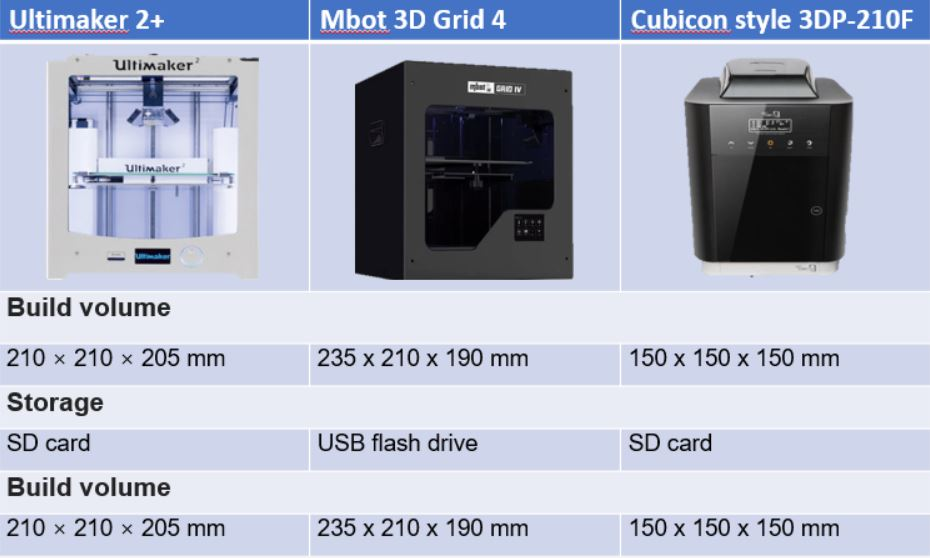

Week 6 & 7: 3D Printing
3D Printing is the process of using a 3D Printer machine to fabricate a 3D Model, which is a convenient and fast method of production, and much more accurate compared to manual work.
3D Printing in SP Fablab requires certification, which is given after succesfully completing a quiz, requiring you to score 100% to pass. However, after completing this, you will qualify to be able to book for the practical test. Aside from hardware, you will also need to download the slicer softwar to prepare your model for printing, which in our case, is Cura In my case, I will be installing Ultimaker Cura 4.6 for my use.
The school's fablab has 3 types of 3D Printers as of the time of this documentation. The 3 types of printers are:

Cura is used as it can be changed to prep a model for all 3 types of printers. The software can be installed by clicking on this link to navigate to the website.
Shown below is a quick start guide for
The 3D Printers can do a few manufacturing processes, which are methods of creating or making something. In this case, the specific manufacturing processes the 3D Printers can do are:
- Additive and Subtractive Manufacturing, which is essentially refer to the addition and removal of materials to a product.
- Cutting, which refers to the seperation or opening of an object into multiple pieces
- Forming, which can be boiled down to reshaping or manipulating an object and its shape, without removing or adding any additional material.
But why would you use 3D Printing?
While 3D Printing may seem like an interesting thing to learn, what reasons are there to use it outside of pure leisure or personal interests? What advantages and motivations would there be to use this method of manufaturing a product?
- Design Freedom
- This is a large reason for many people, as 3D Printing can be done from a 3D Model, allowing many people to simply pick up their laptop and download a 3D design software and design a model to their wishes, which can then be printed out easily, without needing to worry about their personal handicraft skills.
- Faster Production
- For large projects with many components, 3D Printing can be much faster to produce and make as compared to manual processes, saving much more time for people to work on improving the project or design further by moving onto testing a physical prototype.
- Customisation
- The model, as mentioned before, is digital and can be accessed and worked on easily from the comfort of your laptop or desktop, allowing you to customize and change things on the fly if the printed product is not to your liking, instead of having to physically modify the product and risk not being able to revert the changes made.
- Less Waste
- Due to the nature of 3D Printing, you can save materials by making slight tweaks to thick planes of a product, or simply just not having to remove large pieces of materials to create the shape you wish to see.
- Many other Reasons
Of all the advantages 3D Printing presents, one particular advantage is the large range of materials that can be used when printing out a design. These materials are:
- PLA
- Polylatic Acid, or more commonly known as PLA, is a default filament for most extrusion 3D printers, and one of the most popular as it is rigid, but does not require high temperatures, while still being low cost and has good shelf life.
- ABS
- Acrylonitrile Butadiene Styrene, or ABS for short is a low cost plastic that is heat resistant, impact resistant, and rigid. It is commonly used to print cases and toys such as lego bricks.
- PETG
- Glycol Modified Polyethylene Terephthalate (PET), or PETG for short, is a chemically resistant, semi-rigid material that has good impact and water resistance. This is generally used in products that are in direct exposure to water such as Planter Pots, or Water Bottles.
- Nylon
- Nylon is a heat resistant plastic that is also known for its toughness and flexibility, but it requires temperatures as high as 250 degress celsius. It is used to print cable ties and other flexible palstic products.
- TPU
- Thermoplastic polyurethane, or TPU as it is better known by is a plastic that is elastic, transparent and also resistant to oil, grease and abrasion. It is mainly used in silicone, and mobile phone covers.
- HIPS
- High-Impact Polystyrene, or HIPS for short, is as its name implies, a high impact resistant material that is durable, and soluble. It can be used in DIY Projects or as a support materials for printing a project using a non soluble material.
- Glass
- Glass is a transparent material that can resistant some impact, albeit it is fragile and brittle. It can be used to print transparent pieces such as windows or viewing panels
- Ceramic
- Ceramics are heat resistant and hard wearing, but fragile. They are generally used visual arts, or in the manufacturing of tableware.
- Carbon Fiber
- Carbon Fibers are rigid materials that are strong and stiff due to it being a composite, all while still being lightweight. It does not require a heated bed to print. It is often used to make functional protoypes or lightweight props.
- Metals
- Aluminum, Steel, Titanium, etc. Metals in 3D Printing can be used to print much more durable parts that can withstand large amounts of mechanical stress, heat, and corrosion. These can be used to print parts in mechanical systems.
- Food
- Food can be 3D Printed using pureed ingredients, and are used in the production of food that are easier for people with chewing disabilities to eat.
- Concrete
- This requires a large 3D Printer, but it can be used to build structures quickly at low cost.
- Failure
- When the design is not printed according to the model, it is considered a failure. This can stem from the temperature that the design is being printed at being too low, causing the layers to not stick and fuse like they are supposed to. This can also stem from the geometry and design of the model, so ensure that no ssections are too thin or small for it to properly fuse.

- Layer Height
- 3D models are printed in layers, and the height of each layer is aptly named the "Layer Height". This setting can be adjusted through a slicer program, and can affect the final print's speed, resolution, and smoothness. The height of each layer is typically measured in microns, with one micron being equal to 0.001mm. By lowering the layer height, the printer will print more in detail as it prints more layers to reach the desired height. Additionally, layer height may affect precision in smaller moving parts found in print in place mechanisms.

- Time
- The time taken to print can be a large constraint, as depending on the size or complexity of the print, it may take a long time to print.
- Cost
- Ventilation
- Supported Overhang
- Supported Clearance
- Unsupported Overhang
- Unsupported Angles
- Unsupported Bridging
- Wall Thickness
- Dimensions
- Anisotropy
- Surface Finish
- Infill
- Post-Processing